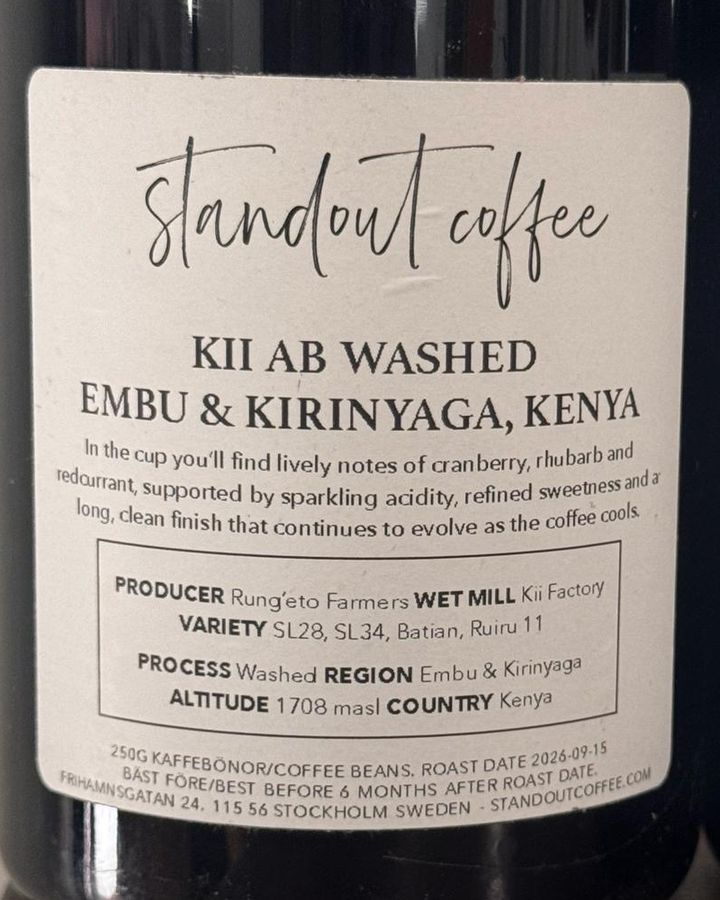

Kii AB
קניה · Embu & Kirinyaga
- מגדלים
- Rung’eto Farmers
- תחנת עיבוד
- Kii Factory
- זנים
- SL28, SL34, Batian, Ruiru 11
- עיבוד
- שטוף
- גובה
- 1,708 מ׳
In the cup you’ll find lively notes of cranberry, rhubarb and redcurrant, supported by sparkling acidity, refined sweetness and a long, clean finish that continues to evolve as the coffee cools.
לפי Standout: תסיסה יבשה עד 36 שעות, שטיפה, וייבוש עד 20 יום על מצעים מוגבהים. Rung’eto הוא קואופרטיב של חקלאים קטנים על המדרונות של הר קניה.